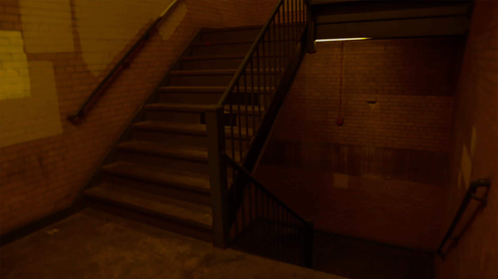
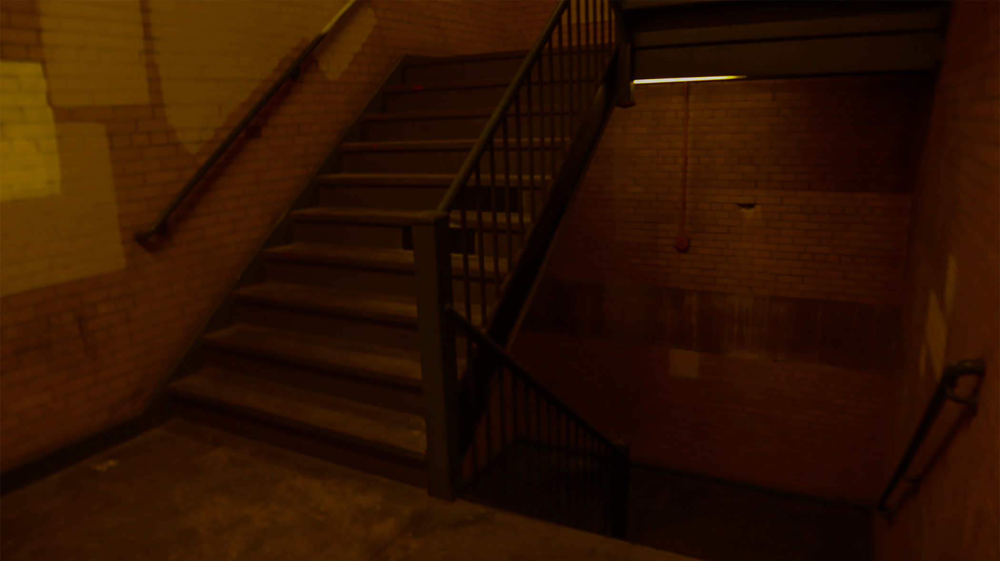

There were some stairs I found at Hunter that looks like something from a horror movie, although it was also pretty exciting when I took the picture. I decreased the amount of exposure, thinking that might make it more creepier.

For this photo, I went inside a empty classroom and saw how cool it looked, especially with the sunlight pouring out of the window. It was more darker than I expected so I cranked up the exposure a little so that it would be more visble while keeping the shadows there.